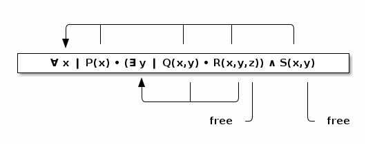

In this section we construct our first simple programming language, an untyped λ-calculus (lambda calculus).
More specifically, we construct a λ-calculus without (static) type checking (enforcement), but including the natural numbers and booleans.
The λ-calculus is, put simply, a notation for forming and applying functions.
The (basic) λ-calculus as we know it was famously invented by Alonzo Church in the 1920s.
As mentioned, the λ-calculus is a Turing-complete model of computation.
The λ-calculus has since seen widespread use in the study and design of programming languages.
Pure functional programming languages are clearly descended from the λ-calculus; the λ-calculus embodies their model of computation.
Imperative languages instead use a model of computation based on the Von-Neumann architecture,
In our discussion of abstractions, we mentioned the abstraction of the function/method/procedure/subroutine.
In its pure version, every term in the λ-calculus is a function.
The pure untyped λ-calculus has just three sort of terms;
The meaning of each term is, informally:
Recall the notion of free and bound variables.
For instance, in the language of predicate logic, we can view the variables bound like so.

You may have noticed that our method for constructing function in the λ-calculus (the λ-abstraction) only allows us to construct single-argument functions.
Rather than complicating our set of terms by admitting functions of multiple arguments, we use the technique of currying functions.
λ x → x
is a familiar function; it is the identity function.
We will use the name id to refer to this function.
λ x → λ y → x
λ x → λ y → y
⟨term⟩ ∷= var | λ var → ⟨term⟩ | ⟨term⟩ ⟨term⟩
In the case that we are restricted to ASCII characters, we will write abstraction as
“lambda” var . ⟨term⟩
The semantics of the λ-calculus is given by a reduction strategy;
:TODO:
:TODO:
:TODO:
:TODO: